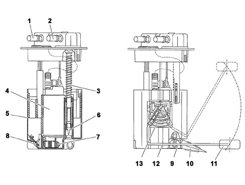
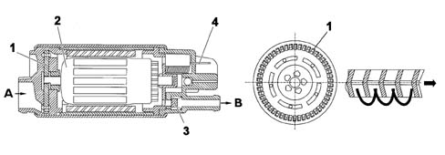

ELECTRIC FUEL PUMP ASSEMLBY (low pressure)
- Path
- Descriptions > 10 ENGINE > 1040 FUEL TANK AND PIPES > ELECTRIC FUEL PUMP ASSEMLBY (low pressure)
- Kind
- system description
- Applies to
- engines: 2.0 16V JTD, 2.2 16V JTD; all production periods
- Interactive page
- https://sloeber94.github.io/elrnDB-fUlss/en/#/179006594
Applies to: engines: 2.0 16V JTD, 2.2 16V JTD; all production periods
The submerged low pressure electric fuel pump assembly consists of:
- electric supply pump;
- pre-filter;
level gauge;
single-acting valve, which prevents the fuel circuit from draining when the engine is switched off.
View of submerged pump assembly

1, Supply circuit connector | 8, First filling valve |
2, Return circuit connector | 9, Venturi effect pump |
3, Telescopic suspension | 10, Venturi effect pump filter |
4, Electric supply pump | 11, Float |
5, Chamber | 12, Level sensor arm |
6, Jet | 13, Level sensor |
7, Pump pre-filter |
DESCRIPTION
The low pressure electric fuel pump assembly is in one piece.
PERMANENT AVAILABILITY OF FUEL
The chamber must always be full so that the electric pump can operate irrespective of how full the tank is and at what angle.
InItial filling
A first filling valve allows the fuel to enter the sump and then closes when the level in the sump is the same as that in the tank.
Permanent filling
The return circuit is connected to a Venturi effect pump which uses the flow for this circuit to draw up the fuel from the tank and send it to the chamber thereby guaranteeing the filling of the latter.
LOW PRESSURE ELECTRIC FUEL PUMP
The low pressure electric pump is the turbine type, forming one piece with the level sensor but it can be replaced individually.
The pumping element consists of an impeller with numerous vanes at the ends, moved by a direct current electric motor.
A duct in the pump casing surrounds the entire perimeter of the impeller. As a result of the centrifugal force produced by its rotation, the impeller expels the fuel through the duct inside of which there is a continuous increase in pressure.
The pump has a breather opening to prevent the formation of vapour bubbles in the case of high temperatures.
A single-acting valve prevents the circuit from draining after the engine is switched off, a function that facilitates restarting later on.
View of electric fuel pump

A, Fuel inlet
B, Fuel outlet
1, Impeller | 3, Check valve |
2, Electric motor | 4, Electrical connection |
LEVEL SENSOR
The fuel level sensor in the tank consists of an arm at the end of which there is a float. The arm is secured to a lever in contact with a resistive layer. The movement of the lever (proportional to the movement of the float makes it possible to translate the variations in the level of the fuel into an ohmic variation which is transmitted to the NCM. In order to be able to draw off the small amounts of fuel remaining and ensure a correct reading of the fuel level, even when the amount of fuel in the is minimal, the electric pum assembly should adhere to the bottom of the tank. The telescopic suspension makes it possible to compensate for manufacturing tolerances (different tank heights) and the geometric fluctuations of the tank due to ageing and thermal variations.
The fuel level reading system for the vehicle utilizes a strategy designed to ensure that the reading on the instrument panel is strictly correlated with the amount of fuel actually in the tank, keeping the effect of outside factors to a minimum, namely:
- the fuel splashing around whilst driving;
- manoeuvres and/or the position of the vehicle whilst driving, parking on a hill, etc.;
- long distances uphill/downhill or large bends, etc.